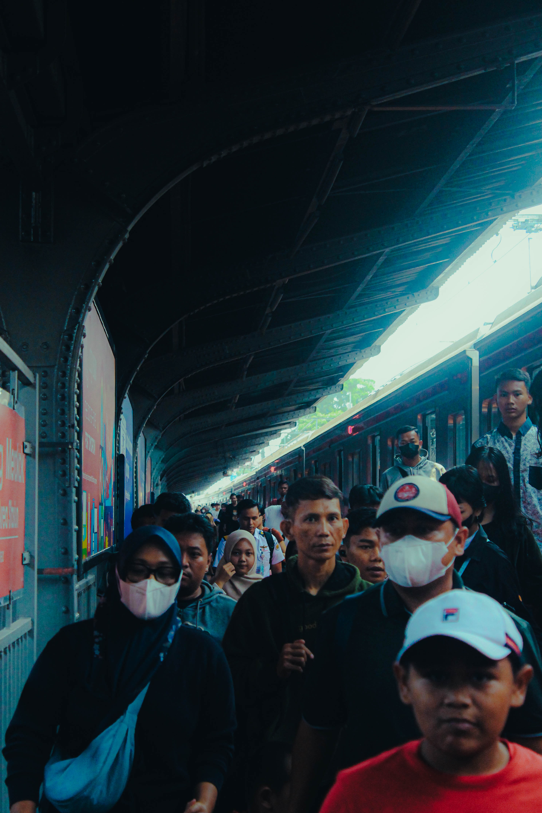
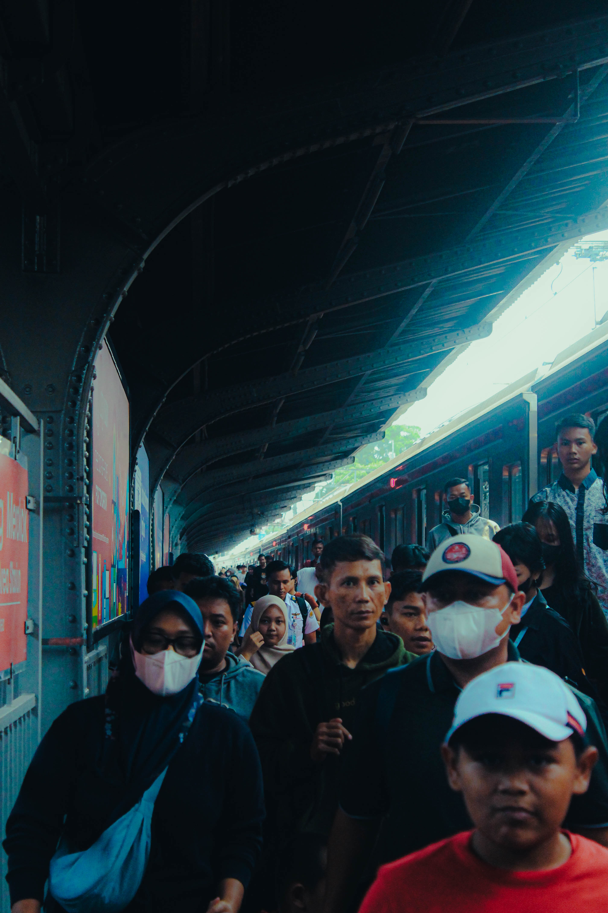
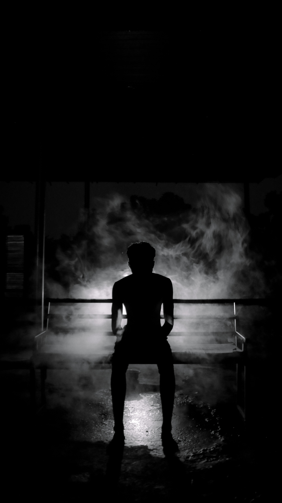
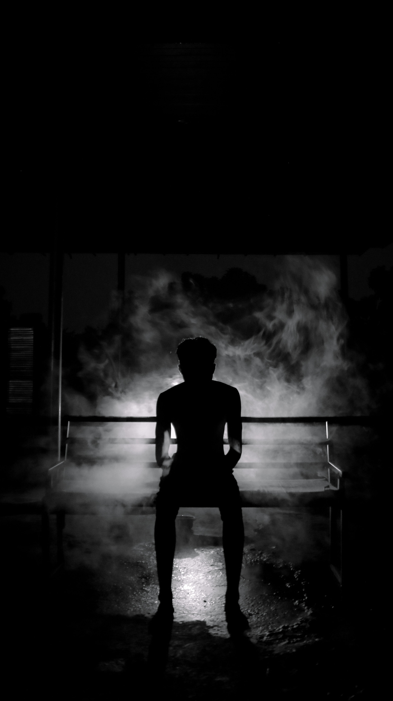

WARNA-WARNI JIWA
ALREADY
COME
MAX 1.0


Denial
Denial (Penyangkalan): Pada tahap ini, seseorang masih dalam tahap menyangkal ketika mengalami sesuatu yang menyedihkan. Dalam keadaan ini, terkadang individu menolak rasa kesedihan yang datang. Pada MAX 10 warna yang diambil sebagai simbol tahap denial adalah warna ungu.
Anger
Anger (Kemarahan): Fase ketika individu merasakan emosi amarah yang kuat akibat situasi menyedihkan yang dialaminya karena seseorang masih merasa tidak adil atas apa yang telah menimpanya. Warna merah menjadi simbol anger.


Bargaining
Bargaining (penawaran): Setelah fase penyangkalan dan marah, tahap selanjutnya adalah penawaran. Jadi, ketika seseorang mengalami patah hati, mereka akan melakukan penawaran. Misalnya saja "Seandainya.." atau "Seharusnya.." Mereka seolah-olah sedang bernegosiasi untuk keluar dari rasa sakit hati. Pada MAX 10 warna yang diambil sebagai simbol tahap bargaining adalah warna hijau.
Depresion
Depression (depresi): Pada tahap ini, seseorang sudah terlalu berlarut dalam kesedihannya. Mereka akan cenderung merasa hampa. Tak hanya itu saja, mereka akan banyak menghabiskan waktu dengan menangis dan bersedih. Tak sedikit dari mereka yang memutuskan untuk mengakhiri hidup. Hal tersebut karena mereka tidak tahan dengan rasa sakit dari berduka. Dalam keadaan ini, terkadang individu menolak rasa kesedihan yang datang. Pada MAX 10 warna yang diambil sebagai simbol tahap denial adalah warna biru.


 



 



Acceptance
Acceptance (penerimaan): Tahap penerimaan ini berarti seseorang telah menerima kenyataan dari kehilangan yang mereka alami. Pada tahap ini, seseorang juga sudah mulai sadar bahwa kehilangan merupakan hal yang nyata dan tidak bisa diubah. Penerimaan bukan berarti seseorang tidak merasakan sedih lagi. Melainkan perasaan berdamai dengan keadaan tersebut & sadar bahwa hidup harus terus berlanjut. Dalam keadaan ini, terkadang individu menolak rasa kesedihan yang datang. Pada MAX 10 warna yang diambil sebagai simbol tahap denial adalah warna putih.
Joyful Radiance
"Joyful Radiance" mencerminkan kebangkitan, harapan, dan kedamaian setelah masa kesulitan. Tema ini menyarankan transformasi positif, di mana seseorang menemukan kedamaian dan kebahagiaan setelah menghadapi kesedihan atau trauma.


Media Partner


Sponsored By

MAX
KILAS BALIK
AFTER MOVIE MAX 8
MAX GALLERY
MAX 8
MAX 7
MAX 6
MAX 5
MAX 4
MAX 3
MAX 2
MAX AFTER MOVIES
WEBSITE MULTIMEDIAN


Website Transportasi
Zein Mukaffi Akbarudin
Portofolio Firas
Firas Fadly Albar

Video Agency
Firas Fadly Albar
Julo(Baju Online)
Firas Fadly Albar
Indonesian Food
Irviean Yoga Mahardika
Peakaboo
Zein Mukaffi Akbarudin
Vespa
Zein Mukaffi Akbarudin
Tech Landing Page
Zein Mukaffi Akbarudin
Website U.Star
Berliano Ardiansyah
Tic-Tac-Toe vs AI
M Ahya A